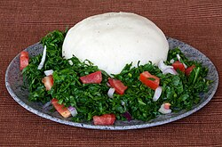

HOME
UGALI

Description:
Ugali is a simple, stiff porridge staple from Kenya
Ingredients:
- 2 cups of water.
- 1 1/2 cups of maize flour.
Steps:
- Boil 2 cups of water in a sufuria.
- Gradually stir in 1 1/2 cups of maize flour.
- Cook on low heat for 15 minutes.
- Continously stir and press against the pot to break lumps.
-
It is ready once it forms a smooth thick dough like consistency and
separates from the sufuria.